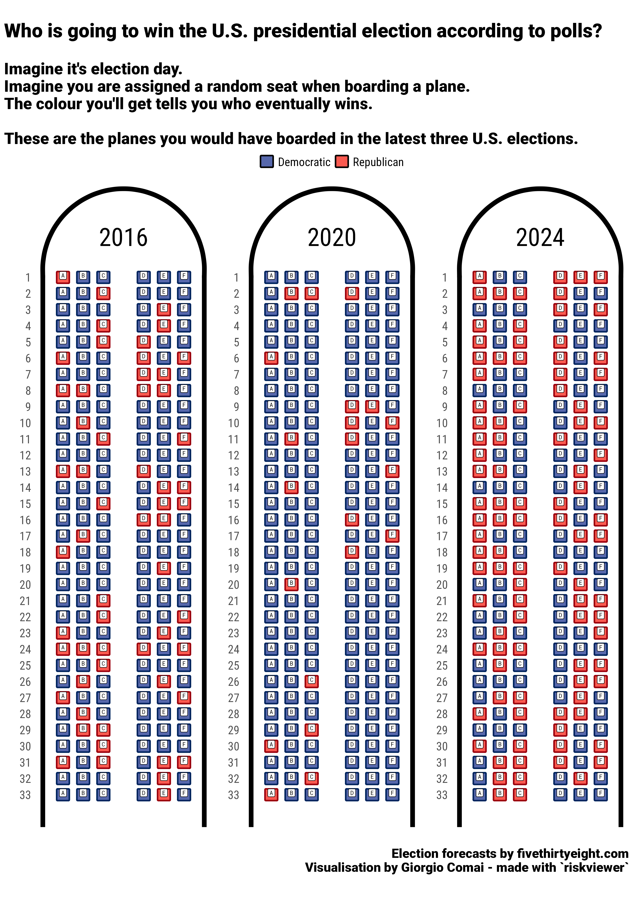

Here are 538’s final forecasts for recent elections, shown as if for a seating chat for a booking system of an airline.
Source for election forecast data, fivethirtyeight.com:
These include also the unlikely chance of none of the sides reaching 270 electoral college seats (mostly, because of 768 parity, but plausibly, because of 1 or more electoral college seats going to third party candidates). As in most years the chance appears close to 0.2%, they have been removed from the visualisation: only one seat every couple of planes would need to be reserved for that specific scenario.
| year | D | R | N |
|---|---|---|---|
| 2016 | 71% | 28% | 1.00% |
| 2020 | 89% | 10% | 0.45% |
| 2024 | 50% | 49% | 0.20% |

For more context, see: